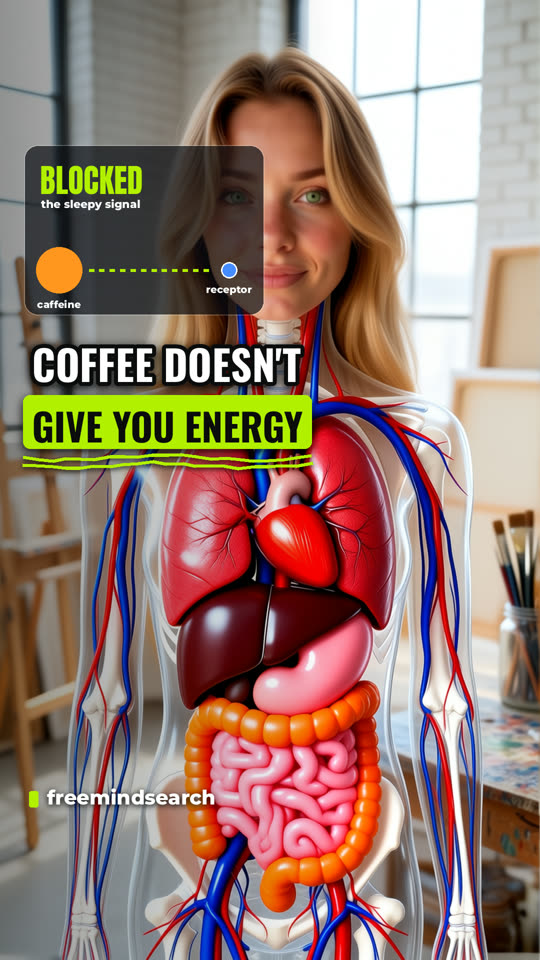

Story
Coffee doesn't give you energy. Here's what it really does
Caffeine doesn't add energy: it slips into the brain's adenosine receptors, the molecule that builds up while you're awake and makes you sleepy, and blocks them. When it wears off, the tiredness that was building can come back at once.
Watch on FacebookWatch on InstagramWatch on TikTokWatch on YouTube
So, how many cups of coffee do you drink a day?
Sources
- Coffee won't give you extra energy, it just borrows a bit that you'll pay for later (Emma Beckett, University of Newcastle, via Sleep Review): https://sleepreviewmag.com/sleep-health/parameters/impact-during-wake/coffee-wont-give-extra-energy/
- Adenosine, caffeine, and sleep-wake regulation (J Sleep Res, 2022): https://pubmed.ncbi.nlm.nih.gov/35575450/
Made with AI: the presenter, voice and visuals are AI-generated. Every story is researched and fact-checked by a person, with its sources listed.